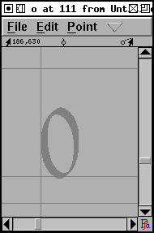
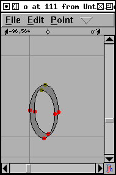

Tutorial #2
- Font Creation
- Creating a glyph (tracing outlines)
- Navigating to other glyphs
- On to the next glyph (consistent directions)
- Consistent serifs and stem widths
- Building accented glyphs
- Building a ligature
- Lookups and features
- Examining metrics
- Kerning
- Glyph variants
- Anchoring marks
- Conditional features
- Checking your font
- Generating it
- Font Families
- Final Summary
- Bitmap strikes
- Scripting Tutorial
- Notes on various scripts
Navigating to glyphs.
The font view provides one way of navigating around the glyphs in a font. Simple scroll around it until you find the glyph you need and then double click on it to open a window looking at that glyph.
Typing a glyph will move to that glyph.
However some fonts are huge (Chinese, Japanese and Korean fonts have thousands
or even tens of thousands of glyphs) and scrolling around the font view is
a an inefficient way of finding your glyph. View->Goto provides
a simple dialog which will allow you to move directly to any glyph for which
you know the name (or encoding). If your font is a Unicode font, then this
dialog will also allow you to find glyphs by block name (ie. Hebrew rather
than Alef).
The simplest way to navigate is just to go to the next or previous glyph.
And View->Next Char and View->Prev Char will
do exactly that.
Creating the letter "o" -- consistent directions
In the previous example the bitmap of the letter filled the canvas of the image. And when FontForge imported the image it needed to be scaled once in the program. But usually when you create the image of the letter you have some idea of how much white space there should be around it. If your images are exactly one em high then FontForge will scale them automatically to be the right size. So in the following examples all the images have exactly the right amount of white-space around them to fit perfectly in an em.
For the next example double click on the square in the font view that should contain "o", and import "o_Ambrosia.png" into it.
|  |  |
 |
 |
Notice that the first outline is drawn clockwise and the second counter-clockwise. This change in drawing direction is important. Both PostScript and TrueType require that the outer boundary of a glyph be drawn in a certain direction (they happen to be opposite from each other, which is a mild annoyance), within FontForge all outer boundaries must be drawn clockwise, while all inner boundaries must be drawn counter-clockwise.
If you fail to alternate directions between outer and inner boundaries you
may get results like the one on the left
 . If you fail to draw the
outer contour in a clockwise fashion the errors are more subtle, but will
generally result in a less pleasing result once the glyph has been rasterized.
. If you fail to draw the
outer contour in a clockwise fashion the errors are more subtle, but will
generally result in a less pleasing result once the glyph has been rasterized.
TECHNICAL AND CONFUSING: the exact behavior of rasterizers varies. Early PostScript rasterizers used a "non-zero winding number rule" while more recent ones use an "even-odd" rule. TrueType uses the "non-zero" rule. The description given above is for the "non-zero" rule. The "even-odd" rule would fill the "o" correctly no matter which way the paths were drawn (though there would probably be subtle problems with hinting).
Filling using the even-odd rules that a line is drawn from the current pixel to infinity (in any direction) and the number of contour crossings is counted. If this number is even the pixel is not filled. If the number is odd the pixel is filled. In the non-zero winding number rule the same line is drawn, contour crossings in a clockwise direction add 1 to the crossing count, counter-clockwise contours subtract 1. If the result is 0 the pixel is not filled, any other result will fill it.
The command Element->Correct
Direction will look at each selected contour, figure out whether
it qualifies as an outer or inner contour and will reverse the drawing direction
when the contour is drawn incorrectly.